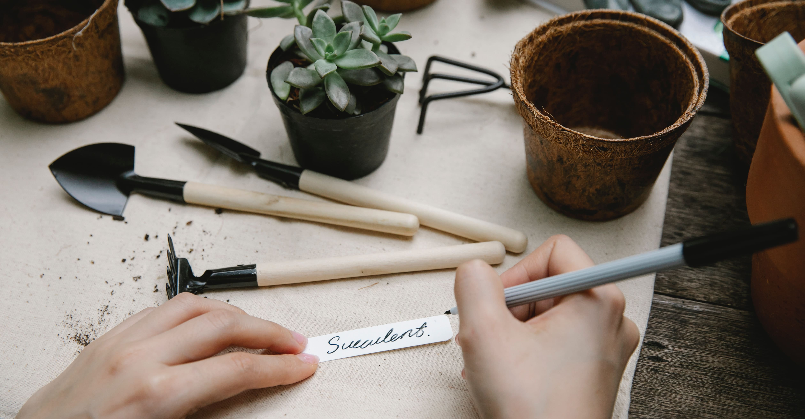
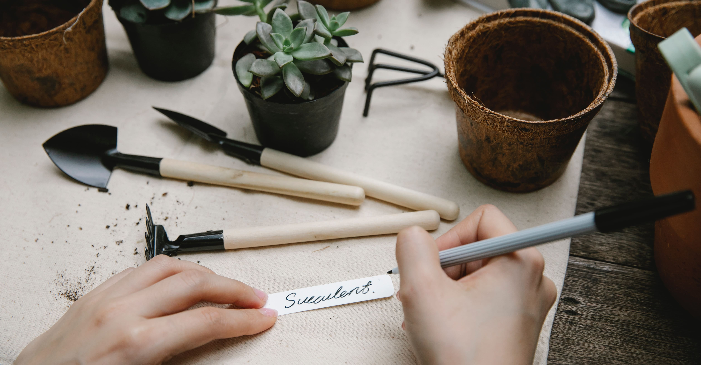

La sociedad en general se inclina cada vez mas, hacia el uso de productos ecológicos, que no dañen el medio ambiente y que no sean tóxicos o peligrosos.
En la jardinería, este factor toma una importancia especial, ya que mucha gente se vuelca a esta actividad como hobby, para relajarse, reencontrarse con la naturaleza, compartir momentos en familia o acercar a los hijos pequeños a nuevas y naturales experiencias.
Pero todos se encuentran con un gran obstáculo: manipular fertilizantes químicos o plaguicidas tóxicos convencionales para controlar las plagas de sus huertas, jardines o plantas de interior, les resulta muy peligroso, molesto y extremadamente incómodo.
Solucionar este problema es muy fácil, gracias al furor por el cuidado de la ecología cada vez es mas variada y abundante la oferta de productos ecológicos, (fertilizantes, sustratos, humus) o insecticidas, funguicidas (anti-hongos) biológicos, repelentes de insectos, técnicas para que el propio jardín o la huerta generen la capacidad de auto-defenderse, etc.
Estamos orgullos de comercializar solo productos ecologicos amigables con el medioambiente, la familia y las mascotas; porque cuidar la naturaleza es cuidarnos!!!
 
